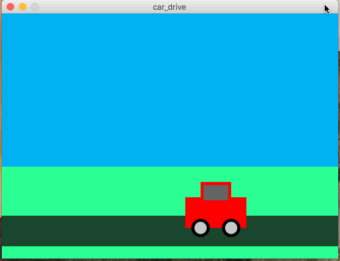

In this assignment, you will write a processing program that generates a very simple animation of a car driving. Below is an example of what the finished product should resemble:

Notice several things about this animation, which you should mimic:
You should use lines or custom shapes for the birds. The car must have at least a body, wheels, tires, and a window. If you want, you can make the car, birds, or tree much more detailed and intricate.
Name your file car_drive.pde.
You should start by just getting the static (non-moving) parts of the drawing on the screen (The sky, earth, road, and car). Once you have this, work on the tree movement first. The tree might be a little easier, since you don’t need to repeat anything.
Lastly, do the birds. There must be 5 birds, and they must be “repeated” using a for-loop.
All of your programming should be well-formatted and easy for the graders to read and comprehend. You should follow the style guidelines that we have discussed in class. Each program file should have a header comment at the top that has roughly the following format:
//
// Author: Student Name
// Description:
// A short description of what this program does!
//
It is due on 2/9/2018 at 5:00pm.
Turn in each of the files described in the spec (1 total) the assignment 4 dropbox in D2L before the due date. Make sure to name the files exactly as this document specifies. In general, make sure to follow these instructions precisely.